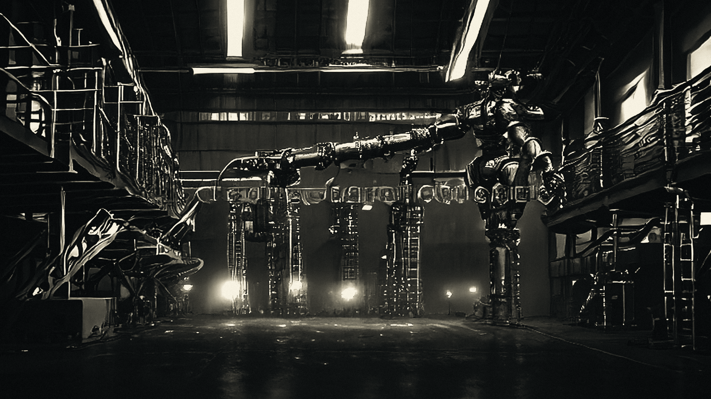
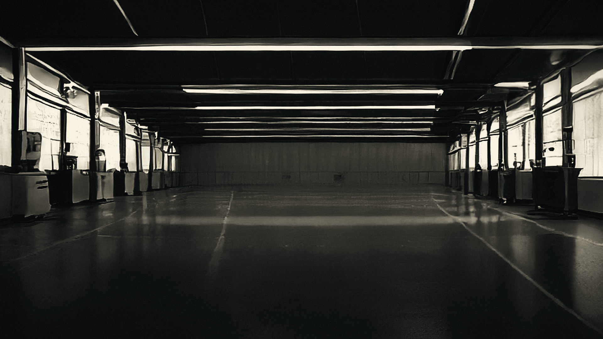
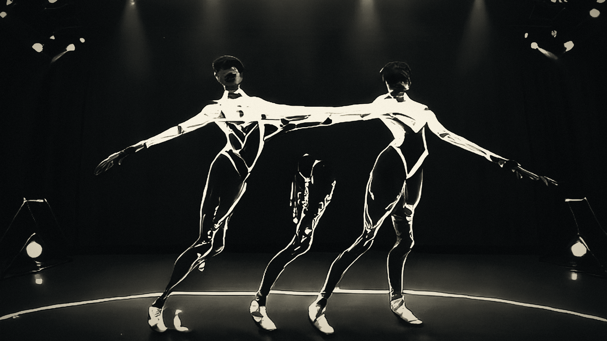

00Object
Articulated hand, 22 degrees of freedom.
22 dof / macro 1:1 / cell 03
01Displacement
The cheap tier goes first.
0.6 ms / recorded always / 1.5 b

02The gate
The gate is a cost inequality.
q > cS/cL / q* 0.18 / ε 0.05

03The verifier
Physics adjudicates.
μ 0.60 / false accept ≤ 2% / 320 n·m

04Escalation
Summoned, not consulted.
180 ms / on reject only / writeback ledger

05Consolidation
Failure becomes reflex.
λ < 1 / 4 stages / fmin 20

06Fixed point
The machine stops paying twice.
q ↑ / cost ↓ / trend to fixed point

00Object
Articulated hand, 22 degrees of freedom.
22 dof / macro 1:1 / cell 03
ARCHIMEDESAR-1 / control loop · reel 06
T+00:001920 × 1080 / 30 fps
cell 03 · 2026-10-17
sheet 1 / 1